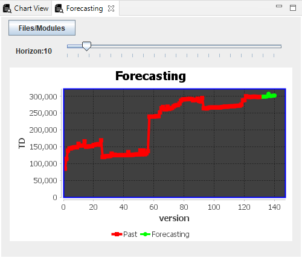
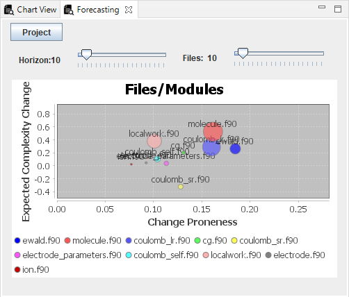

The Forecasting view, like the newly added forecasting tab of the independent TD management tool, informs the user on the prediction of the project’s TD and the Files/Modules that are more likely to become unmaintainable. The user can select the number of versions to predict and the number of files/modules, through the sliding bars. Both of the two charts that can be accessed from this view can be seen in the Figure below.
 